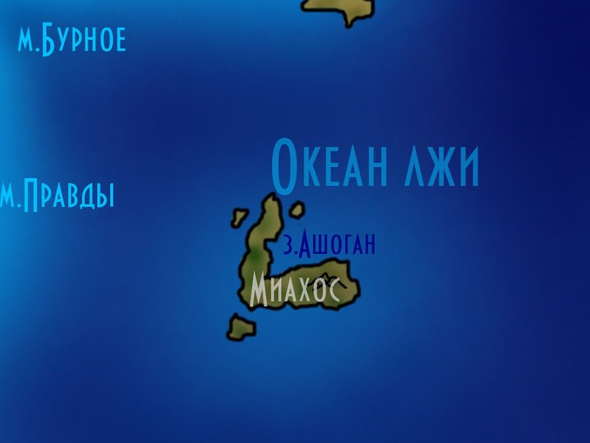
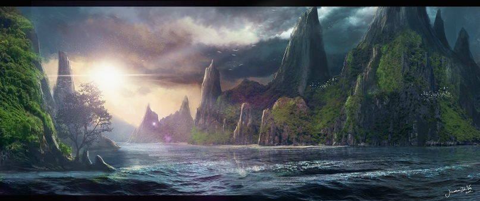

Миахос
Миахос — остров-угол, одна из сторон которого выходит на север. Окружённый восточным, северным и южным морями Океана лжи, он редко видит корабли, а те, что приходят, обычно не возвращаются. За скалами скрывается маленький, но густонаселённый мир — мир инсолов, тропических гигантов и смертоносных туманов.
Карта Миахоса
Скалы, тропики, пустыня и туман
images/miahos-map.jpgРекомендуемый размер:
1200 × 900 px (4:3)

Составлена по редким рассказам выживших моряков. Там, где линии расходятся со скалами, — верьте скалам.

Остров и берега
Основной остров Миахос имеет форму угла, и одна из его сторон выходит на север. Она окружена восточным, северным и южным морями Океана лжи, поэтому корабли сюда ходят редко, а если ходят — то, как правило, не возвращаются. Если морякам и хватает удачи выжить, до самого острова они всё равно добраться не могут: Миахос окружён скалами. Обойти их, конечно, можно, но никто не хочет рисковать.
Однако прямо за скалами скрывается этот маленький, но густонаселённый мир. Берега Миахоса песчаные, воды у них чистые и прозрачные, однако достаточно глубокие. Живи в этом мире люди — возможно, они даже нашли бы логичным и полезным позагорать на этих пляжах.
Прибрежные инсолы
Людей здесь, однако, не водится. Зато прибрежные воды — обиталище прибрежных инсолов, как правило, ракообразных и моллюскоподобных, хотя нельзя сказать, что они полностью заняли все берега Миахоса.
Леса: от умеренных к тропическим
Углубляясь от пляжа вглубь континента, вы попадёте в тропические леса, хотя и не сразу — вначале вас ждут скорее леса умеренной полосы, с различными животными, вполне привычными и на других континентах. Однако стоит пройти дальше — и вы попадёте именно в тропическую часть леса. Климат здесь отличается в сторону повышенной влажности, а температура воздуха резко поднимается, хотя и не совсем ясно, с чем связаны столь радикальные изменения климата на столь небольших территориях.
Тропические леса отличаются также и тем, что чем больше вы углубляетесь в них, тем крупнее становятся окружающие растения, а виды инсолов в этих угодьях столь многочисленны, что, кажется, и дня не хватит, дабы перечислить их все.
Отдельного внимания заслуживает и то, что с увеличением размеров растений появляются и весьма нетипичные и крайне опасные растения-хищники, которые, вырастая в размере и всячески меняясь, могут представлять реальную угрозу для взрослых инсолов, а для любых других видов — и подавно. Встречаются также и нетипичные уже животные — более крупные, а посему, если это хищники, и более опасные.
Плюсом тропических лесов является и то, что в них очень много водных источников и пространств, и все они ведут к выходу из лесов или же к горе в центре острова.
Гора в центре
Уже из тропических зарослей видно эту возвышающуюся над всеми лесами гору, и чем ближе к ней продвигаться через заросли, тем более активной и развитой становится инсольская культура и инфраструктура — по сути, вы приближаетесь к самому центру этой закрытой и неизученной цивилизации. Надо также отметить, что здесь размеры растений достигают своего пика, становясь в два, а то и три раза больше привычных. Ещё важным отличием будет то, что гора эта не заснежена на верхушке.
Пустыня и река
Продвигаясь ещё дальше, если пройти мимо горы и продолжить путь по воде, можно наконец выйти из тропических лесов и внезапно обнаружить, что вы попали в самую настоящую пустыню, через которую, впрочем, идёт широкая река. Если идти по ней, можно пройти всю пустыню, но замет это немало времени, а климат, будто бы насмехаясь над теми, кто к нему не привык, меняется так же резко, как и ранее: влажность исчезает и появляется сухость, а тому, какая жара царит в пустыне, не факт, что даже эпитет придумали.
Пустыня, в целом, достаточно спокойное место; живущие там инсолы спокойно и размеренно тянут свою жизнь, хотя, конечно, свои отпечатки на менталитет и поведение откладывает порой недостаток пищи. Впрочем, не стоит обманываться — пустыня так же и опасна дикими вырожденцами, которые, выйдя из-под контроля, вполне могут оседать под песчаными барханами, дожидаясь жертвы, кем бы она ни была. В среднем на преодоление пустыни, если постоянно двигаться и останавливаться только по ночам, может уйти от двух до трёх дней.
Спасением является лишь река, благодаря которой можно не опасаться умереть от жажды, да и вокруг неё по обеим сторонам вполне себе плодородная земля с некоторым количеством растительности.
Болото
Когда вы преодолели пустыню, двигаясь вдоль реки, вы добираетесь до очередного чуда здешнего климата — река превратится в болотистую местность, а вернее сказать, в большое болото; влажность вновь поднимется, а вот температура, наоборот, станет ниже. Болото заселено самыми разными существами — как привычными на других островах, так и их более крупными и агрессивными сородичами и даже особенными тварями, которые, впрочем, не менее, а может даже и более опасны.
Степной лес
Прямо за болотом, которое тянется достаточно далеко, следует степной лес, схожий с теми лесами, которые встречают вас на восточной части Миахоса сразу после прибрежной линии. Главными отличиями являются более высокая влажность и несколько более низкая температура. К счастью, лес этот заселён по большей части вполне привычными флорой и фауной, правда, лишь на окраине с болотом — ибо сразу за ним следует северо-западная окраина острова.
Северо-западная окраина: туман и грибы
Северо-западная окраина острова закрыта зеленоватым туманом и, по сути, является главной опасностью всего острова, причём она беспощадна ко всем живым существам, даже к инсолам, несмотря на некую долю иммунитета у этих существ к воздействию здешних «грибов».
Грибы эти являются грибками-паразитами, они имеют огромные размеры — некоторые экземпляры достигают высоты в 30 метров, а есть и более крупные. Эти растительные организмы чрезвычайно опасны, так как испускают опаснейшие пси-волны, которые привлекают сюда всё живое, кроме инсолов; существа, чей разум порабощён, гибнут и становятся инкубаторами для спор этого грибка, который прорастает прямо через их тела. Казалось бы, уже жутко, но если существо выбирается из этого места, оно всё равно, чаще всего, уже поражено спорами, которые в течение недели, без лечения, прорастут в нём.
Инсолы, впрочем, часто используют эти грибы для изготовления лекарств и пищи: их природный иммунитет позволяет им быть внутри этой опаснейшей экосистемы какое-то время без особого вреда для себя. А те, что живут в лесу у самого тумана, и вовсе выработали к воздействию грибков полный иммунитет.
Обрыв и соседний остров
Оканчиваются эти земли обрывом, ибо расположены на скале, и высота той скалы, немного-немало, 30 метров, что так же не позволяет кому-либо попасть на остров уже с северо-западной стороны.
Отдельно стоит упомянуть небольшой остров по соседству с Миахосом, однако он, в целом, идентичен основному острову с поправкой на то, что в нём две половины покрыты тропическими лесами, а его центр, в котором находится высокая гора, представляет из себя пустыню, в которой, впрочем, никакой реки уже нет.
География Мериона · Остров Миахос